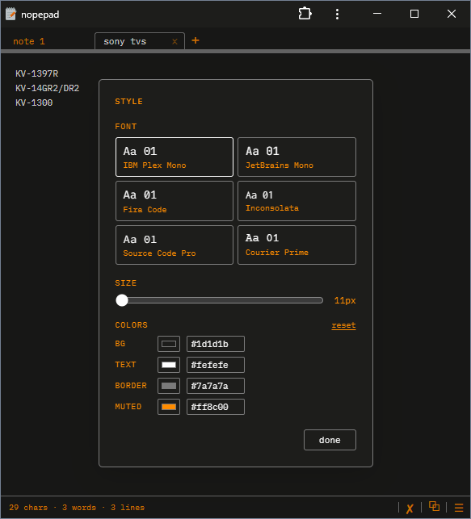

NOPEPAD
This is a minimal notepad web app I used to test different node packaging options such as neutralinojs, electron, and Chrome PWA. This code was developed in part by Claude Sonnet 4.6. Features custom styling, draggable tabbed notes, and custom context menu.
See the source code.
Try it out in Chrome. Click the "Install" button in your address bar to download. May not render properly in other browsers.
